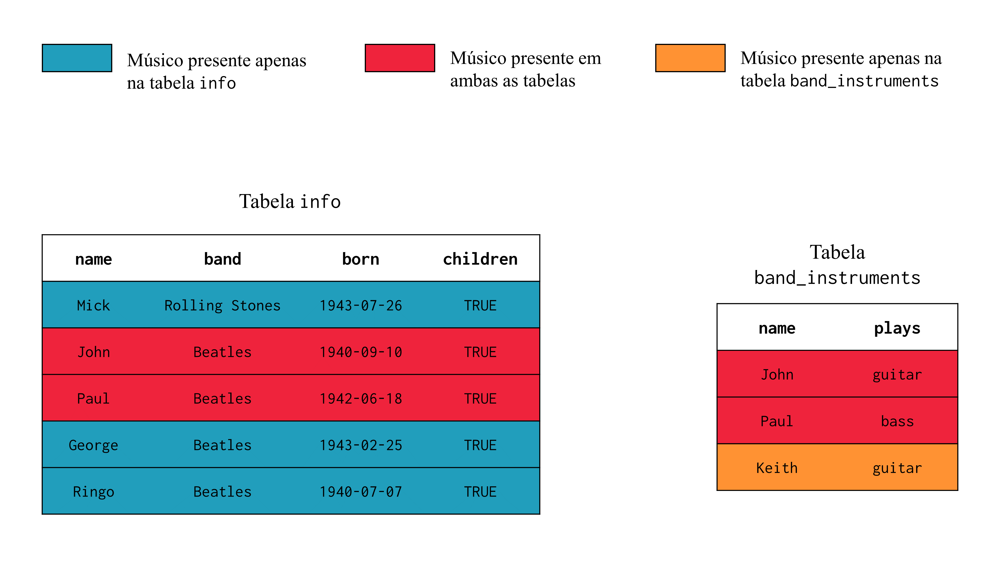
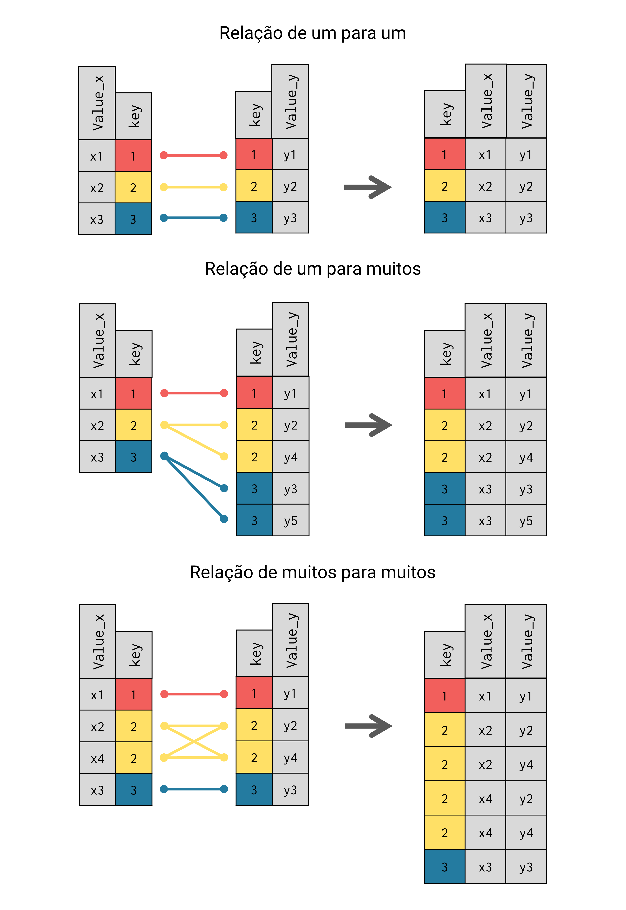

library(tidyverse)
library(dplyr)6 Introdução a base de dados relacionais com dplyr
6.1 Introdução e pré-requisitos
Segundo NIELD (2016, p. 53), joins são uma das funcionalidades que definem a linguagem SQL (Structured Query Language). Por isso, joins são um tipo de operação muito relacionado à RDBMS (Relational DataBase Management Systems), que em sua maioria, utilizam a linguagem SQL. Logo, essa seção será muito familiar para aqueles que possuem experiência com essa linguagem.
Para executarmos uma operação de join, os pacotes básicos do R oferecem a função merge(). Entretanto, vamos abordar o pacote dplyr neste capítulo, que também possui funções especializadas neste tipo de operação. Com isso, para ter acesso às funções que vamos mostrar aqui, você pode chamar tanto pelo pacote dplyr quanto pelo tidyverse.
6.2 Dados relacionais e o conceito de key
Normalmente, trabalhamos com diversas bases de dados diferentes ao mesmo tempo. Pois é muito incomum, que uma única tabela contenha todas as informações das quais necessitamos e, por isso, transportar os dados de uma tabela para outra se torna uma atividade essencial em muitas ocasiões.
Logo, de alguma maneira, os dados presentes nessas diversas tabelas se relacionam entre si. Por exemplo, suponha que você possua uma tabela contendo o PIB dos municípios do estado de Minas Gerais, e uma outra tabela contendo dados demográficos desses mesmos municípios. Se você deseja unir essas duas tabelas em uma só, você precisa de algum mecanismo que possa conectar um valor do município X na tabela A com o valor da tabela B correspondente ao mesmo município X, e através dessa conexão, conduzir o valor da tabela A para esse local específico da tabela B, ou vice-versa. O processo que realiza esse cruzamento entre as informações, e que por fim, mescla ou funde as duas tabelas de acordo com essas conexões, é chamado de join.
Por isso, dizemos que os nossos dados são “relacionais”. Pelo fato de que nós possuímos diversas tabelas que descrevem os mesmos indivíduos, municípios, firmas ou eventos. Mesmo que essas tabelas estejam trazendo variáveis ou informações muito diferentes desses indivíduos, elas possuem essa característica em comum e, com isso, possuem uma relação entre si, e vamos frequentemente nos aproveitar dessa relação para executarmos análises mais completas.
Porém, para transportarmos esses dados de uma tabela a outra, precisamos de alguma chave, ou de algum mecanismo que seja capaz de identificar as relações entre as duas tabelas. Em outras palavras, se temos na tabela A, um valor pertencente ao indivíduo X, e queremos transportar esse valor para a tabela B, nós precisamos de algum meio que possa identificar o local da tabela B que seja referente ao indivíduo X. O mecanismo que permite essa comparação, é o que chamamos de key ou de “chave”.
d <- c("1943-07-26", "1940-09-10", "1942-06-18", "1943-02-25", "1940-07-07")
info <- tibble(
name = c("Mick", "John", "Paul", "George", "Ringo"),
band = c("Rolling Stones", "Beatles", "Beatles", "Beatles", "Beatles"),
born = as.Date(d),
children = c(TRUE)
)
band_instruments <- tibble(
name = c("John", "Paul", "Keith"),
plays = c("guitar", "bass", "guitar")
)Como exemplo inicial, vamos utilizar a tabela info, que descreve características pessoais de um conjunto de músicos famosos. Também temos a tabela band_instruments, que apenas indica qual o instrumento musical utilizado por parte dos músicos descritos na tabela info.
info# A tibble: 5 × 4
name band born children
<chr> <chr> <date> <lgl>
1 Mick Rolling Stones 1943-07-26 TRUE
2 John Beatles 1940-09-10 TRUE
3 Paul Beatles 1942-06-18 TRUE
4 George Beatles 1943-02-25 TRUE
5 Ringo Beatles 1940-07-07 TRUE band_instruments# A tibble: 3 × 2
name plays
<chr> <chr>
1 John guitar
2 Paul bass
3 Keith guitarPortanto, precisamos de uma key para detectarmos as relações entre as tabelas info e band_instruments. Uma key consiste em uma variável (ou um conjunto de variáveis), que é capaz de identificar unicamente cada indivíduo descrito em uma tabela, sendo que essa variável (ou esse conjunto de variáveis), deve obrigatoriamente estar presente em ambas as tabelas em que desejamos aplicar o join. Dessa forma, podemos através dessa variável, discernir quais indivíduos estão presentes nas duas tabelas, e quais se encontram em apenas uma delas.
Ao observar as tabelas info e band_instruments, você talvez perceba que ambas possuem uma coluna denominada name. No nosso caso, essa é a coluna que representa a key entre as tabelas info e band_instruments. Logo, ao identificar o músico que está sendo tratado em cada linha, a coluna name nos permite cruzar as informações existentes em ambas tabelas. Com isso, podemos observar que os músicos John e Paul, estão disponíveis em ambas as tabelas, mas os músicos Mick, George e Ringo estão descritos apenas na tabela info, enquanto o músico Keith se encontra apenas na tabela band_instruments.

info e band_instrumentsSegundo NIELD (2016), podemos ter dois tipos de keys existentes em uma tabela:
Primary key: uma variável capaz de identificar unicamente cada uma das observações presentes em sua tabela.
Foreign key: uma variável capaz de identificar unicamente cada uma das observações presentes em uma outra tabela.
Com essas características em mente, podemos afirmar que a coluna name existente nas tabelas info e band_instruments, se trata de uma primary key. Pois em ambas as tabelas, mais especificamente em cada linha dessa coluna, temos um músico diferente, ou em outras palavras, não há um músico duplicado.
Por outro lado, uma foreign key normalmente contém valores repetidos ao longo da base e, por essa razão, não são capazes de identificar unicamente uma observação na tabela em que se encontram. Porém, os valores de uma foreign key certamente fazem referência a uma primary key existente em uma outra tabela. Tendo isso em mente, o objetivo de uma foreign key não é o de identificar cada observação presente em uma tabela, mas sim, de indicar ou explicitar a relação que a sua tabela possui com a primary key presente em uma outra tabela.
Por exemplo, suponha que eu tenha a tabela children abaixo. Essa tabela descreve os filhos de alguns músicos famosos, e a coluna father caracteriza-se como a foreign key dessa tabela. Não apenas porque os valores da coluna father se repetem ao longo da base, mas também, porque essa coluna pode ser claramente cruzada com a coluna name pertencente às tabelas info e band_instruments.
children <- tibble(
child = c("Stella", "Beatrice", "James", "Mary",
"Heather", "Sean", "Julian", "Zak",
"Lee", "Jason", "Dhani"),
sex = c("F", "F", "M", "F", "F", "M", "M", "M", "F", "M", "M"),
father = c(rep("Paul", times = 5), "John", "John",
rep("Ringo", times = 3), "Harrison")
)
children# A tibble: 11 × 3
child sex father
<chr> <chr> <chr>
1 Stella F Paul
2 Beatrice F Paul
3 James M Paul
4 Mary F Paul
5 Heather F Paul
# ℹ 6 more rows6.3 Introduzindo joins
Tendo esses pontos em mente, o pacote dplyr nos oferece quatro funções voltadas para operações de join. Cada uma dessas funções executam um tipo de join diferente, que vamos comentar na próxima seção. Por agora, vamos focar apenas na função inner_join(), que como o seu próprio nome dá a entender, busca aplicar um inner join.
Para utilizar essa função, precisamos nos preocupar com três argumentos principais. Os dois primeiros argumentos (x e y), definem os data.frame’s a serem fundidos pela função. Já no terceiro argumento (by), você deve delimitar a coluna, ou o conjunto de colunas que representam a key entre as tabelas fornecidas em x e y, usando a função join_by().
Basta listar as colunas dentro de join_by() que representam as keys do seu join, e fornecer o resultado para o argumento by de inner_join(). Desse modo, os indivíduos serão relacionados/cruzados entre as tabelas A e B com base em um teste lógico de igualdade. Ou seja, “banana” na tabela A é cruzada com “banana” na tabela B, “maçã” com “maçã”, “abacaxi” com “abacaxi”, etc. Alguns autores chamam isso de equality join.
Ao realizarmos o join, as duas tabelas de input são unidas para formar uma nova tabela de output. Porém, em um inner join, apenas as linhas de indivíduos que se encontram em ambas as tabelas serão retornadas na nova tabela gerada. Perceba abaixo, que a função inner_join() criou uma nova tabela contendo todas as colunas presentes tanto na tabela info quanto em band_instruments. Perceba também que apenas as linhas referentes aos músicos John e Paul foram mantidas, pois esses são os únicos indivíduos que aparecem em ambas as tabelas.
inner_join(info, band_instruments, by = join_by(name))# A tibble: 2 × 5
name band born children plays
<chr> <chr> <date> <lgl> <chr>
1 John Beatles 1940-09-10 TRUE guitar
2 Paul Beatles 1942-06-18 TRUE bass ## A mesma operação com o uso do pipe ( %>% ):
info %>%
inner_join(band_instruments, by = join_by(name))Ao observar esse resultado, você talvez chegue à conclusão de que um processo de join é equivalente ao processo executado pela função PROCV() do Excel. Essa é uma ótima comparação! A função PROCV() realiza uma espécie de join parcial, ao trazer para a tabela A, uma coluna pertencente a tabela B, de acordo com uma key que conecta as duas tabelas.
Porém um join consiste em um processo de união, em que estamos literalmente fundindo duas tabelas em uma só. Já a função PROCV(), é capaz de transportar apenas uma única coluna por tabela, logo, não é de sua filosofia, fundir as tabelas envolvidas. Por isso, se temos cinco colunas em uma tabela A, as quais desejamos levar até a tabela B, nós precisamos de cinco PROCV()’s diferentes no Excel, enquanto no R, precisamos de apenas um inner_join() para realizarmos tal ação.
Por último, vale destacar uma característica muito importante de um join, que é o seu processo de pareamento. Devido a essa característica, a ordem das linhas presentes em ambas as tabelas se torna irrelevante para o resultado. Por exemplo, veja na Figura 6.1, um exemplo de join, onde a coluna ID representa a key entre as duas tabelas. Repare que as linhas na tabela à esquerda que se referem, por exemplo, aos indivíduos de ID 105, 107 e 108, se encontram em linhas diferentes na tabela à direita. Mesmo que esses indivíduos estejam em locais diferentes, a função responsável pelo join, vai realizar um pareamento entre as duas tabelas, antes de fundi-las. Dessa maneira, podemos nos certificar que as informações de cada indivíduo são corretamente posicionadas na tabela resultante.

6.4 Configurações sobre as colunas e keys utilizadas no join
Haverá momentos em que uma única coluna não será o bastante para identificarmos cada observação de nossa base. Para essas ocasiões, nós devemos utilizar a combinação entre várias colunas, com o objetivo de formarmos uma primary key em nossa tabela.
Por exemplo, suponha que você trabalhe diariamente com o registro de entradas no estoque de um supermercado. Imagine que você possua a tabela registro abaixo, que contém dados da seção de bebidas do estoque, e que apresentam o dia e mes em que uma determinada carga chegou ao estoque da empresa, além de uma descrição de seu conteúdo (descricao), seu valor de compra (valor) e as unidades inclusas (unidades).
registro <- tibble(
dia = c(3, 18, 18, 25, 25),
mes = c(2, 2, 2, 2, 3),
ano = 2020,
unidades = c(410, 325, 325, 400, 50),
valor = c(450, 1400, 1150, 670, 2490),
descricao = c("Fanta Laranja 350ml",
"Coca Cola 2L", "Mate Couro 2L",
"Kapo Uva 200ml", "Absolut Vodka 1L")
)
registro# A tibble: 5 × 6
dia mes ano unidades valor descricao
<dbl> <dbl> <dbl> <dbl> <dbl> <chr>
1 3 2 2020 410 450 Fanta Laranja 350ml
2 18 2 2020 325 1400 Coca Cola 2L
3 18 2 2020 325 1150 Mate Couro 2L
4 25 2 2020 400 670 Kapo Uva 200ml
5 25 3 2020 50 2490 Absolut Vodka 1L Nessa tabela, as colunas dia, mes, ano, valor, unidades e descricao, sozinhas, são insuficientes para identificarmos cada carga registrada na tabela. Mesmo que, atualmente, cada valor presente na coluna descricao seja único, essa característica provavelmente não vai resistir por muito tempo. Pois o supermercado pode muito bem receber amanhã, por exemplo, uma outra carga de refrigerantes de 2 litros da Mate Couro.
Por outro lado, a combinação dos valores presentes nas colunas dia, mes, ano, valor, unidades e descricao, pode ser o suficiente para criarmos um código de identificação único para cada carga. Por exemplo, ao voltarmos à tabela registro, podemos encontrar duas cargas que chegaram no mesmo dia 18, no mesmo mês 2, no mesmo ano de 2020, e trazendo as mesmas 325 unidades. Todavia, essas duas cargas, possuem descrições diferentes: uma delas incluía garrafas preenchidas com Coca Cola, enquanto a outra, continha Mate Couro. Concluindo, ao aliarmos as informações referentes a data de entrada (18/02/2020), as quantidades inclusas nas cargas (325 unidades), e as suas descrições (Coca Cola 2L e Mate Couro 2L), podemos enfim diferenciar essas duas cargas.
Como um outro exemplo, podemos utilizar as bases flights e weather, provenientes do pacote nycflights13. Perceba abaixo, que a base flights já possui um número grande colunas. Essa tabela apresenta dados diários, referentes a diversos voos que partiram da cidade de Nova York (EUA) durante o ano de 2013. Já a tabela weather, contém dados meteorológicos em uma dada hora, e em diversas datas do mesmo ano, e que foram especificamente coletados nos aeroportos da mesma cidade de Nova York.
library(nycflights13)flights# A tibble: 336,776 × 19
year month day dep_time sched_dep_time dep_delay arr_time sched_arr_time
<int> <int> <int> <int> <int> <dbl> <int> <int>
1 2013 1 1 517 515 2 830 819
2 2013 1 1 533 529 4 850 830
3 2013 1 1 542 540 2 923 850
4 2013 1 1 544 545 -1 1004 1022
5 2013 1 1 554 600 -6 812 837
# ℹ 336,771 more rows
# ℹ 11 more variables: arr_delay <dbl>, carrier <chr>, flight <int>, …weather# A tibble: 26,115 × 15
origin year month day hour temp dewp humid wind_dir wind_speed wind_gust
<chr> <int> <int> <int> <int> <dbl> <dbl> <dbl> <dbl> <dbl> <dbl>
1 EWR 2013 1 1 1 39.0 26.1 59.4 270 10.4 NA
2 EWR 2013 1 1 2 39.0 27.0 61.6 250 8.06 NA
3 EWR 2013 1 1 3 39.0 28.0 64.4 240 11.5 NA
4 EWR 2013 1 1 4 39.9 28.0 62.2 250 12.7 NA
5 EWR 2013 1 1 5 39.0 28.0 64.4 260 12.7 NA
# ℹ 26,110 more rows
# ℹ 4 more variables: precip <dbl>, pressure <dbl>, visib <dbl>, …Ao aplicarmos um join entre essas tabelas, poderíamos analisar as características meteorológicas que um determinado avião enfrentou ao levantar voo. Entretanto, necessitaríamos empregar ao menos cinco colunas diferentes para formarmos uma key adequada entre essas tabelas. Pois cada situação meteorológica descrita na tabela weather, ocorre em um uma dada localidade, e em um horário específico de um determinado dia. Com isso, teríamos de utilizar as colunas: year, month e day para identificarmos a data correspondente a cada situação; mais a coluna hour para determinarmos o momento do dia em que essa situação ocorreu; além da coluna origin, que marca o aeroporto de onde cada voo partiu e, portanto, nos fornece uma localização no espaço geográfico para cada situação meteorológica.
Portanto, em todos os momentos em que você precisar utilizar um conjunto de colunas para formar uma key, como o caso das tabelas weather e flights acima, você deve listar os nomes dessas colunas em join_by() e fornecer o resultado para o argumento by da função de join que está utilizando, assim como no exemplo abaixo.
Como ambas as tabelas tem um número grande de colunas, eu vou selecionar as colunas que desejo trazer de ambas as tabelas para dentro do join, antes de aplicar de fato a operação de join. Isso garante que a tabela resultante do join não fique muito abarrotada de colunas que são desnecessárias para a nossa análise. Agora, um detalhe importante, sempre se lembre de incluir nessa seleção, as colunas que formam a key para o seu join. Pois caso contrário, essas colunas deixam de existir nas tabelas, e, como resultado, o join não vai conseguir relacionar as observações entre as tabelas.
Por exemplo, supondo que você precisasse em seu resultado apenas das colunas dep_time e dep_delay da tabela flights, você poderia fornecer os comandos a seguir:
cols_para_key <- c(
"year", "month", "day", "hour", "origin"
)
cols_desejadas <- c("dep_time", "dep_delay")
cols_c <- c(cols_para_key, cols_desejadas)
inner_join(
flights %>% select(all_of(cols_c)),
weather,
by = join_by(year, month, day, hour, origin)
)# A tibble: 335,220 × 17
year month day hour origin dep_time dep_delay temp dewp humid wind_dir
<int> <int> <int> <dbl> <chr> <int> <dbl> <dbl> <dbl> <dbl> <dbl>
1 2013 1 1 5 EWR 517 2 39.0 28.0 64.4 260
2 2013 1 1 5 LGA 533 4 39.9 25.0 54.8 250
3 2013 1 1 5 JFK 542 2 39.0 27.0 61.6 260
4 2013 1 1 5 JFK 544 -1 39.0 27.0 61.6 260
5 2013 1 1 6 LGA 554 -6 39.9 25.0 54.8 260
# ℹ 335,215 more rows
# ℹ 6 more variables: wind_speed <dbl>, wind_gust <dbl>, precip <dbl>, …## Ou selecionando as colunas por subsetting:
inner_join(
flights[ , cols_c],
weather,
by = join_by(year, month, day, hour, origin)
)Antes de partirmos para a próxima seção, vale a pena comentar sobre um outro aspecto importante do join. Por padrão, o join sempre espera que as colunas que formam a sua key estejam nomeadas da mesma maneira em ambas as tabelas. Por exemplo, se nós voltarmos às tabelas info e band_instruments, e renomearmos a coluna name para member em uma das tabelas, um erro será levantado ao tentarmos aplicar novamente um join sobre as tabelas.
colnames(band_instruments)[1] <- "member"
inner_join(info, band_instruments, by = join_by(name))Error in `inner_join()`:
! Join columns in `y` must be present in the data.
✖ Problem with `name`.
Run `rlang::last_trace()` to see where the error occurred.Logo, precisamos ajustar a função join_by() para que o join saiba da existência dessa diferença existente entre os nomes dados às colunas que representam a key entre as tabelas. Para realizar esse ajuste, você deve usar o operador de igualdade (==) entre o nome dados à coluna da tabela A e o nome dado à coluna correspondente na tabela B, dentro de join_by(), como está demonstrado abaixo:
inner_join(info, band_instruments, by = join_by(name == member))# A tibble: 2 × 5
name band born children plays
<chr> <chr> <date> <lgl> <chr>
1 John Beatles 1940-09-10 TRUE guitar
2 Paul Beatles 1942-06-18 TRUE bass 6.5 Diferentes tipos de join
Portanto, um join busca construir uma união entre duas tabelas. Porém, podemos realizar essa união de diferentes formas, e até o momento, apresentei apenas uma de suas formas, o inner join, que é executado pela função inner_join(). Nesse método, o join mantém apenas as linhas que puderam ser encontradas em ambas as tabelas. Logo, se um indivíduo está presente na tabela A, mas não se encontra na tabela B, esse indivíduo será descartado em um inner join entre as tabelas A e B. Como foi destacado por WICKHAM; GROLEMUND (2017, p. 181), essa característica torna o inner join pouco apropriado para a maioria das análises, pois uma importante perda de observações pode ser facilmente gerada neste processo.
Os demais tipos de joins dos quais podemos nos aproveitar, são comumente chamados de outer joins. Tal nome se deve ao fato de que esses tipos buscam preservar as linhas de pelo menos uma das tabelas envolvidas no join em questão. Sendo eles:
left_join(): mantém todas as linhas da tabela definida no argumentox, ou a tabela à esquerda do join, mesmo que os indivíduos descritos nessa tabela não tenham sido encontrados em ambas as tabelas.right_join(): mantém todas as linhas da tabela definida no argumentoy, ou a tabela à direita do join, mesmo que os indivíduos descritos nessa tabela não tenham sido encontrados em ambas as tabelas.full_join(): mantém todas as linhas de ambas as tabelas definidas nos argumentosxey, mesmo que os indivíduos de uma dessas tabelas não tenham sido encontrados em ambas as tabelas.
Em todas as funções de join mostradas aqui, o primeiro argumento é chamado de x, e o segundo, de y, sendo esses os argumentos que definem as duas tabelas a serem utilizadas no join. Simplificadamente, a diferença entre left_join(), right_join() e full_join() reside apenas em quais linhas das tabelas utilizadas, são conservadas por essas funções no produto final do join.
Como essas diferenças são simples, as descrições acima já lhe dão uma boa ideia de quais serão as linhas conservadas em cada função. Todavia, darei a seguir, uma visão mais formal desses comportamentos, com o objetivo principal de fornecer uma segunda visão que pode, principalmente, facilitar a sua memorização do que cada função faz.

Para seguir esse caminho, é interessante que você tente interpretar um join a partir de uma perspectiva mais visual e menos minuciosa do processo. Ao aplicarmos um join entre as tabelas A e B, estamos basicamente, extraindo as colunas da tabela B e as adicionando à tabela A.
Com isso, temos nessa concepção, a tabela fonte (isto é, a tabela de onde as colunas são retiradas), e a tabela destinatária (ou seja, a tabela para onde essas colunas são levadas). Portanto, segundo esse ponto de vista, o join possui sentido e direção, assim como um vetor em um espaço tridimensional. Pois o processo sempre parte da tabela fonte em direção a tabela destinatária. Dessa forma, em um join, estamos resumidamente extraindo as colunas da tabela fonte e as incorporando à tabela destinatária.
Com isso, eu quero criar a perspectiva, de que a tabela fonte e a tabela destinatária, ocupam lados do join, como na Figura 6.2. Ou seja, por esse ângulo, estamos compreendendo o join como uma operação que ocorre sempre da direita para esquerda, ou um processo em que estamos sempre carregando um conjunto de colunas da tabela à direita em direção a tabela à esquerda.
Se mesclarmos essa visão, com as primeiras descrições dos outer joins que fornecemos, temos que o argumento x corresponde a tabela destinatária, e o argumento y, a tabela fonte. Dessa maneira, a tabela destinatária (ou o argumento x) é sempre a tabela que ocupa o lado esquerdo do join, enquanto a tabela fonte (ou o argumento y) sempre se trata da tabela que ocupa o lado direito da operação.
Logo, a função left_join() busca manter as linhas da tabela destinatária (ou a tabela “à esquerda”, que você definiu no argumento x da função) intactas no resultado do join. Isso significa, que caso a função left_join() não encontre na tabela fonte, uma linha que corresponde a um certo indivíduo presente na tabela destinatária, essa linha será mantida no resultado final do join.
Porém, como está demonstrado abaixo, em todas as situações em que a função não pôde encontrar esse indivíduo na tabela fonte, left_join() vai preencher as linhas correspondentes nas colunas que ele transferiu dessa tabela, com valores NA, indicando justamente que não há informações daquele respectivo indivíduo na tabela fonte.
left_join(info, band_instruments, by = join_by(name))# A tibble: 5 × 5
name band born children plays
<chr> <chr> <date> <lgl> <chr>
1 Mick Rolling Stones 1943-07-26 TRUE <NA>
2 John Beatles 1940-09-10 TRUE guitar
3 Paul Beatles 1942-06-18 TRUE bass
4 George Beatles 1943-02-25 TRUE <NA>
5 Ringo Beatles 1940-07-07 TRUE <NA> Em contrapartida, a função right_join() realiza justamente o processo contrário, ao manter as linhas da tabela fonte (ou a tabela “à direita”, que você forneceu ao argumento y). Por isso, para todas as linhas da tabela fonte que se referem a um indivíduo não encontrado na tabela destinatária, right_join() acaba preenchendo os campos provenientes da tabela destinatária, com valores NA, indicando assim que a função não conseguiu encontrar mais dados sobre aquele indivíduo na tabela destinatária. Você pode perceber esse comportamento, pela linha referente ao músico Keith, que está disponível na tabela fonte, mas não na tabela destinatária.
right_join(info, band_instruments, by = join_by(name))# A tibble: 3 × 5
name band born children plays
<chr> <chr> <date> <lgl> <chr>
1 John Beatles 1940-09-10 TRUE guitar
2 Paul Beatles 1942-06-18 TRUE bass
3 Keith <NA> NA NA guitarPor fim, a função full_join() executa o processo inverso da função inner_join(). Ou seja, se por um lado, a função inner_join() mantém as linhas de todos os indivíduos que puderam ser localizados em ambas as tabelas, por outro, a função full_join() sempre traz todos os indivíduos de ambas as tabelas em seu resultado.
Em outras palavras, a função full_join() mantém todas as linhas de ambas as tabelas. De certa forma, a função full_join() busca encontrar sempre o maior número possível de combinações entre as tabelas, e em todas as ocasiões que full_join() não encontra um determinado indivíduo, por exemplo, na tabela B, a função vai preencher os campos dessa tabela B com valores NA para as linhas desse indivíduo. Veja o exemplo abaixo.
full_join(info, band_instruments, by = join_by(name))# A tibble: 6 × 5
name band born children plays
<chr> <chr> <date> <lgl> <chr>
1 Mick Rolling Stones 1943-07-26 TRUE <NA>
2 John Beatles 1940-09-10 TRUE guitar
3 Paul Beatles 1942-06-18 TRUE bass
4 George Beatles 1943-02-25 TRUE <NA>
5 Ringo Beatles 1940-07-07 TRUE <NA>
# ℹ 1 more rowComo o primeiro data.frame fornecido à função *_join(), será na maioria das situações, a sua principal tabela de trabalho, o ideal é que você adote o left_join() como o seu padrão de join (WICKHAM; GROLEMUND, 2017). Pois dessa maneira, você evita uma possível perda de observações em sua tabela mais importante.
6.6 Relações entre keys: primary keys são menos comuns do que você pensa
Na seção Dados relacionais e o conceito de key, nós estabelecemos que variáveis com a capacidade de identificar unicamente cada observação de sua base, podem ser caracterizadas como primary keys. Mas para que essa característica seja verdadeira para uma dada variável, os seus valores não podem se repetir ao longo da base, e isso não acontece com tanta frequência na realidade.
Como exemplo, podemos voltar ao join entre as tabelas flights e weather que mostramos na seção Configurações sobre as colunas e keys utilizadas no join. Para realizarmos o join entre essas tabelas, nós utilizamos as colunas year, month, day, hour e origin como key. Porém, a forma como descrevemos essas colunas na seção passada, ficou subentendido que a combinação entre elas foi capaz de formar uma primary key. Bem, porque não conferimos se essas colunas assumem de fato esse atributo:
flights %>%
count(year, month, day, hour, origin) %>%
filter(n > 1)# A tibble: 18,906 × 6
year month day hour origin n
<int> <int> <int> <dbl> <chr> <int>
1 2013 1 1 5 EWR 2
2 2013 1 1 5 JFK 3
3 2013 1 1 6 EWR 18
4 2013 1 1 6 JFK 17
5 2013 1 1 6 LGA 17
# ℹ 18,901 more rowsComo podemos ver acima, há diversas combinações entre as cinco colunas que se repetem ao longo da base. Com isso, podemos afirmar que a combinação entre as colunas year, month, day, hour e origin não forma uma primary key. Perceba abaixo, que o mesmo vale para a tabela weather:
weather %>%
count(year, month, day, hour, origin) %>%
filter(n > 1)# A tibble: 3 × 6
year month day hour origin n
<int> <int> <int> <int> <chr> <int>
1 2013 11 3 1 EWR 2
2 2013 11 3 1 JFK 2
3 2013 11 3 1 LGA 2Portanto, circunstâncias em que não há uma primary key definida entre duas tabelas, são comuns, inclusive em momentos que você utiliza a combinação de todas as colunas disponíveis em uma das tabelas para formar uma key. Com isso, eu quero destacar principalmente, que não há problema algum em utilizarmos foreign keys em joins.
Não seja obcecado por primary keys! Ao invés de ficar procurando por uma primary key, você deve sempre procurar pela key que tenha o significado mais apropriado para o seu join, baseado no seu conhecimento sobre esses dados (WICKHAM; GROLEMUND, 2017). Logo, durante esse processo, nós não estamos perseguindo primary keys de maneira obsessiva, mas sim, pesquisando por relações verdadeiras e lógicas entre as tabelas.
Por exemplo, no caso das tabelas flights e weather, utilizamos as colunas year, month, day, hour e origin como key, pelo fato de que eventos climáticos ocorrem um dado momento (hour) de um dia específico (year, month e day), além de geralmente se restringir a uma dada região geográfica (origin). Curiosamente, essas colunas não foram suficientes para produzirmos uma primary key, mas foram suficientes para representarmos uma conexão lógica entre as tabelas flights e weather.
Assim sendo, qualquer que seja o tipo de key empregado, o processo de join irá ocorrer exatamente da mesma forma. Porém, o tipo que a key assume em cada tabela pode alterar as combinações geradas no resultado do join. Como temos duas tabelas em cada join, temos três possibilidades de relação entre as keys de cada tabela: 1) primary key \(\rightarrow\) primary key; 2) primary key \(\rightarrow\) foreign key; 3) foreign key \(\rightarrow\) foreign key. Ou seja, em cada uma das tabelas envolvidas em um join, as colunas a serem utilizadas como key podem se caracterizar como uma primary key ou como uma foreign key.
Como exemplo, o join formado pelas tabelas info e band_instruments, possui uma relação de primary key \(\rightarrow\) primary key. Pois a coluna name é uma primary key em ambas as tabelas. Por outro lado, o join formado pelas tabelas flights e weather, possui uma relação de foreign key \(\rightarrow\) foreign key, visto que as cinco colunas utilizadas como key não são capazes de identificar unicamente cada observação nas duas tabelas, como comprovamos acima.

Com isso, temos a opção de compreendermos a relação entre as keys, como uma relação de quantidade de cópias, fazendo referência direta ao fato de que uma primary key não possui valores repetidos ao longo da base, enquanto o mesmo não pode ser dito de uma foreign key. Logo, uma relação primary key \(\rightarrow\) primary key pode ser identificada como uma relação de um para um, pois sempre vamos contar com uma única chave para cada observação em ambas as tabelas. Para mais, podemos interpretar uma relação primary key \(\rightarrow\) foreign key, como uma relação de um para muitos, pois para cada chave única presente em uma das tabelas, podemos encontrar múltiplas irmãs gêmeas presentes na outra tabela.
Em contrapartida, se tivermos uma relação foreign key \(\rightarrow\) foreign key, ou uma relação de muitos para muitos, para cada conjunto de keys repetidas em ambas as tabelas, todas as possibilidades de combinação serão geradas. Em outras palavras, nesse tipo de relação, o resultado do join será uma produto cartesiano como demonstrado pela Figura 6.3.
Relações de um para um são raras e, por essa razão, você geralmente irá lidar com relações de um para muitos e de muitos para muitos em suas tabelas. No caso de relações de um para muitos, as primary keys são replicadas no resultado do join, para cada repetição de sua key correspondente na outra tabela, como pode ser visto na Figura 6.3. Por padrão, as funções de join do pacote dplyr sempre emitem um warning de aviso, caso elas descubram que as keys que você escolheu criam uma relação de “um para muitos” ou de “muitos para muitos” entre as suas tabelas.
6.7 Portanto, joins podem ser uma fonte de repetições indesejadas em seus dados
Ao explicar as relações de um para muitos e de muitos para muitos entre keys, eu estava querendo destacar que produtos cartesianos são extremamente comuns em todos os tipos de joins. Quando os alunos são introduzidos pela primeira vez ao mundo dos joins, muitos tendem a interpretar que, por exemplo, a função left_join() produz exatamente o mesmo número de linhas que a tabela destinatária (ou a tabela x) utilizada no join. Ou ainda, que se as duas tabelas utilizadas no join possuírem o mesmo número de linhas, que a função inner_join() vai necessariamente retornar um número menor ou igual de linhas em seu resultado.
Essa é uma confusão tão comum, que Hadley Wickham chegou a escrever uma votação no Twitter1 que demonstra como um produto cartesiano pode ser gerado devido a essa relação entre keys. Como exemplo prático, vamos recriar exatamente a situação que Hadley estava descrevendo nesse tweet. Repare que temos duas tabelas abaixo, df1 e df2. Ambas as tabelas, possuem uma coluna chamada de x. Porém, apenas a tabela df1 possui uma coluna y, e apenas a tabela df2 possui uma coluna z.
df1 <- data.frame(x = c(1, 1), y = c(1, 2))
df2 <- data.frame(x = c(1, 1), z = c(3, 4))
print(df1) x y
1 1 1
2 1 2print(df2) x z
1 1 3
2 1 4Ao aplicarmos um inner_join() entre essas tabelas, quantas linhas você espera encontrar no resultado do join? Você provavelmente pensou em 2 linhas, mas na realidade, são retornadas 4 linhas diferentes. Além disso, vale destacar que, para esse exemplo específico, o resultado de inner_join() é idêntico aos resultados produzidos por full_join(), left_join() e right_join(). Ao observarmos atentamente as combinações entre as colunas y e z, podemos compreender melhor o que está acontecendo neste resultado.
Em ambas as tabelas, a coluna x não é capaz de identificar sozinha cada observação única da tabela, logo, a relação criada pela coluna x é uma relação de muitos para muitos entre as duas tabelas. Por essa razão, o join entre as tabelas df1 e df2 acaba gerando um produto cartesiano entre as duas observações de cada tabela, de modo que, no final, temos \(2 \times 2 = 4\) linhas retornadas. Portanto, todas as combinações possíveis entre \((y, z)\) foram retornadas, sendo elas: \((1,3); (1,4); (2,3); (2,4)\).
inner_join(df1, df2, by = join_by(x)) x y z
1 1 1 3
2 1 1 4
3 1 2 3
4 1 2 4Sendo assim, caso você esteja trabalhando sobre uma tabela A que contém exatas 1000 linhas, e você aplica diversas transformações sobre essa tabela (incluindo a aplicação de joins), e, no final, acaba gerando uma tabela de 1200 linhas, você pode suspeitar que os joins que você está aplicando e os possíveis produtos cartesianos que eles estejam gerando, sejam a fonte de tal expansão de sua tabela.
Em meu trabalho como analista, estou o tempo todo analisando como diversos usuários estão navegando por um determinado fluxo. E para tal análise estou constantemente aplicando joins entre tabelas, e as relações entre as keys dessas tabelas são parte fundamental desse trabalho. Pois caso eu não tenha cuidado com essas relações, eu posso acabar gerando repetições indesejadas de um mesmo usuário, devido ao produto cartesiano gerado no join, e por causa dessas repetições, eu posso acabar interpretando que 100 usuários passaram por um ponto x do fluxo, quando na verdade, apenas 77 usuários de fato passaram por este ponto.
Portanto, quando estiver trabalhando com joins, é importante que você sempre os interprete como uma relação entre os indivíduos ou categorias descritas em cada tabela, e não como um filtro baseado no número de linhas de cada tabela. Um left join não busca gerar um resultado que tem o mesmo número de linhas da tabela destinatária, mas sim, um resultado que contém os mesmos indivíduos ou categorias descritas na tabela destinatária. Lembre-se disso.
6.8 A função join_by() e joins de desigualdade
Até aqui, nós falamos muito pouco da função join_by() e das alternativas que ela oferece para desempenharmos outros tipos de join, especialmente, os joins de desigualdade. Nas seções e exemplos anteriores, mostramos apenas exemplos de joins de igualdade, pois estávamos sempre interessados em relacionar as observações das duas tabelas com um teste de igualdade.
Ou seja, estávamos sempre relacionando “banana na tabela A com banana na tabela B”, “maçã na tabela A com maçã na tabela B”, etc. Sempre procurando por e relacionando as observações que possuíam a mesma key (ou chave) entre si. Por isso que muitas pessoas caracterizam essas operações como um join de igualdade.
Mas existe um outro caminho, que são os “joins de desigualdade”. Em resumo, nesse tipo de join, nós queremos relacionar as observações entre as tabelas, com base em operadores lógicos em que a igualdade se torna opcional, ou então, que indicam desigualdade mesmo. Por exemplo, os operadores de “maior que” (>), ou “maior que ou igual” (>=). O operador “maior que” indica explicitamente que os dois valores envolvidos no teste lógico precisam ser diferentes um do outro, um deve ser maior que o outro. Já no operador “maior que ou igual”, a igualdade se torna opcional. O valor pode ser igual, mas ele também pode ser maior que o outro.
Como exemplo, um join com o operador de “maior que” indica que uma determinada key na tabela A vai ser relacionada com qualquer key na tabela B cujo valor seja maior que o valor da key na tabela A. Você talvez perceba com essa descrição que, relações entre keys de “um para um” são ainda mais raras (ou quase inexistentes) em joins de desigualdade, mais do que são já são em joins de igualdade.
Portanto, lembre-se que, o tipo do join (inner, left, right ou full) determina quais indivíduos vão aparecer no resultado final do join. Se vão ser os indivíduos presentes em ambas as tabelas, ou se vão ser os indivíduos presentes em apenas uma das tabelas, ou se vão ser todos os indivíduos de ambas as tabelas. Por outro lado, a questão que estamos descrevendo aqui, de ser um join de igualdade ou um join de desigualdade, afeta o join de um modo diferente. Mais especificamente, isso determina como as observações são cruzadas entre as tabelas.
Hoje, o pacote dplyr possui 3 métodos diferentes de joins de desigualdade que podemos realizar através da função join_by(). Eles são: 1) o join de desigualdade “clássico”; 2) rolling join; e 3) overlap join. Todos esses métodos são diferentes subtipos de joins de desigualdade. Logo, todos eles são baseados em desigualdades criadas pelos operadores <, <=, > e >=.
6.8.1 Desigualdade clássica
Vamos começar pelo join de desigualdade “clássico”. Você pode interpretar que esse é o subtipo de join de desigualdade que não tem nenhum comportamento extra, ou especial. Em outras palavras, ele funciona exatamente como você esperaria que um join de desigualdade funcionasse.
Como exemplo, vamos usar as tabelas reference e segments abaixo:
segments <- tibble(
segment_id = 1:4,
chromosome = c("chr1", "chr2", "chr2", "chr1"),
start = c(140, 210, 380, 230),
end = c(150, 240, 415, 280)
)
reference <- tibble(
reference_id = 1:4,
chromosome = c("chr1", "chr1", "chr2", "chr2"),
start = c(100, 200, 300, 415),
end = c(150, 250, 399, 450)
)Por exemplo, suponha que eu queira unir essas tabelas, usando a coluna chromosome como key. Mas além disso, eu quero trazer apenas as linhas da tabela B cujo o valor na coluna start for maior ou igual ao valor da coluna start na tabela A.
Perceba no exemplo abaixo, que, a primeira linha da tabela reference (chromosome = "ch1" e start = 100) foi relacionada com duas linhas distintas da tabela segments. Pois em ambos os casos, o valor da coluna chormosome é igual, e também, o valor na coluna start na tabela segments é maior que o valor dessa mesma coluna na tabela reference. Em contrapartida, a segunda linha da tabela reference (chromosome = "ch1" e start = 200) foi relacionada com uma única linha da tabela segments. Pois apenas nesse caso, o valor na coluna start na tabela segments é maior que o valor dessa mesma coluna na tabela reference.
by <- join_by(chromosome, start <= start)
inner_join(reference, segments, by = by)# A tibble: 4 × 7
reference_id chromosome start.x end.x segment_id start.y end.y
<int> <chr> <dbl> <dbl> <int> <dbl> <dbl>
1 1 chr1 100 150 1 140 150
2 1 chr1 100 150 4 230 280
3 2 chr1 200 250 4 230 280
4 3 chr2 300 399 3 380 4156.8.2 Rolling join
Em resumo, enquanto um join de desigualdade clássico pode relacionar \(n\) linhas da tabela B com 1 linha na tabela A, um rolling join sempre relaciona apenas 1 linha da tabela B com 1 linha da tabela A. Mais especificamente, a linha da tabela B cujo valor seja o mais próximo possível de seu par na tabela A. Portanto, um rolling join é uma espécie de join que está interessado em encontrar as observações da tabela B que são as mais próximas possíveis das observações da tabela A.
Para transformar um join de desigualdade clássico em um rolling join, tudo o que você precisa fazer é encapsular a expressão de desigualdade dentro da função closest(). Se pegarmos exatamente o mesmo exemplo da seção anterior, podemos encapsular a expressão start <= start dentro da função closest(), e como resultado, temos um resultado diferente da seção anterior.
Perceba que, dessa vez, a primeira linha da tabela reference (chromosome = "ch1" e start = 100) foi relacionada com uma única linha da tabela segments, ao invés de duas linhas. Pois dessa vez, o join não quer encontrar todas as linhas em que o valor na coluna start da tabela segments é maior que o valor na mesma coluna na tabela reference. Dessa vez, o join quer encontrar as linhas na tabela segments onde o valor na coluna start é o mais próximo possível de seu par na tabela reference.
by <- join_by(chromosome, closest(start <= start))
inner_join(reference, segments, by = by)# A tibble: 3 × 7
reference_id chromosome start.x end.x segment_id start.y end.y
<int> <chr> <dbl> <dbl> <int> <dbl> <dbl>
1 1 chr1 100 150 1 140 150
2 2 chr1 200 250 4 230 280
3 3 chr2 300 399 3 380 4156.8.3 Overlap join
Um overlap join é um subtipo de join que se preocupa principalmente com intervalos (ou ranges) de valores. Então para cada intervalo encontrado na tabela A, o join vai procurar por observações na tabela B que estejam dentro deste intervalo de alguma forma.
Para esse subtipo de join, você pode dizer que cada observação na tabela B precisa estar dentro do intervalo na tabela A (função between()); ou então, você pode dizer que um intervalo na tabela B precisa estar contido/dentro do intervalo na tabela A (função within()); ou ainda, você pode dizer que o intervalo na tabela B deve estar invadindo (ou sobrepondo) em algum nível o intervalo da tabela A (função overlaps()).
Como um primeiro exemplo, se eu fornecer a expressão between( y$start, x$start, x$end ) para join_by(), eu estou dizendo ao join, que encontre observações na tabela segments cujo valor na coluna start esteja dentro do intervalo criado pelas colunas start e end na tabela reference. Ou seja, eu poderia atingir exatamente o mesmo resultado incluindo as expressões y$start >= x$start e y$start <= x$end em join_by(), pois o significado seria o mesmo.
No exemplo abaixo, a primeira linha de reference (chromosome = "ch1", start = 100, end = 150) foi relacionada com a primeira linha de segments. Pois o valor de 140 na coluna start na tabela segments está dentro do intervalo \([100, 150]\).
by <- join_by(chromosome, between(y$start, x$start, x$end))
inner_join(reference, segments, by = by)# A tibble: 3 × 7
reference_id chromosome start.x end.x segment_id start.y end.y
<int> <chr> <dbl> <dbl> <int> <dbl> <dbl>
1 1 chr1 100 150 1 140 150
2 2 chr1 200 250 4 230 280
3 3 chr2 300 399 3 380 415Por outro lado, com a expressão within( y$start, y$end, x$start, x$end ) em join_by(), eu estou dizendo ao join, que encontre observações na tabela segments cujo o intervalo criado pelas colunas start e end, esteja contido/dentro do intervalo criado pelas colunas start e end na tabela reference. No exemplo abaixo, somente a primeira linha de ambas as tabelas foram relacionadas entre si. Pois somente nesse caso, o intervalo criado na tabela reference (\([140, 150]\)) está contido dentro do intervalo criado na tabela segments (\([100, 150]\)).
by <- join_by(
chromosome,
within(y$start, y$end, x$start, x$end)
)
inner_join(reference, segments, by = by)# A tibble: 1 × 7
reference_id chromosome start.x end.x segment_id start.y end.y
<int> <chr> <dbl> <dbl> <int> <dbl> <dbl>
1 1 chr1 100 150 1 140 150Já a expressão overlaps( x$start, x$end, y$start, y$end ) em join_by(), significa que o join vai procurar por observações na tabela segments cujo o intervalo criado pelas colunas start e end, esteja sobrepondo (ou “invadindo”) em algum nível o intervalo criado pelas colunas start e end na tabela reference. No exemplo abaixo, perceba que o intervalo \([200, 250]\) da tabela reference está invadindo ou sobrepondo parte do intervalo \([230, 280]\) da tabela segments. Por isso essas observações foram relacionadas/conectadas.
by <- join_by(
chromosome,
overlaps(x$start, x$end, y$start, y$end)
)
inner_join(reference, segments, by = by)# A tibble: 4 × 7
reference_id chromosome start.x end.x segment_id start.y end.y
<int> <chr> <dbl> <dbl> <int> <dbl> <dbl>
1 1 chr1 100 150 1 140 150
2 2 chr1 200 250 4 230 280
3 3 chr2 300 399 3 380 415
4 4 chr2 415 450 3 380 4156.9 Estudo de caso: analisando eventos de usuários
Após vermos os joins de desigualdade, creio que esta é a oportunidade perfeita para vermos um estudo de caso bem rápido. Aqui nesta seção, vamos usar dados de eventos de usuários em algum fluxo de vendas. Suponha que você tenha duas tabelas diferentes:
- A tabela
incomingscontém dados sobre as entradas dos usuários para dentro do fluxo. - A tabela
eventscontém dados sobre os eventos que cada usuário realizou dentro do fluxo.
Ou seja, na tabela incomings eu consigo entender como cada usuário entrou para dentro do fluxo. Que horário ele entrou, por qual canal ele entrou, etc. Já na tabela events eu consigo entender o que ele fez dentro do fluxo. Para importar essas tabelas para sua sessão, use os comandos abaixo:
github <- "https://raw.githubusercontent.com/pedropark99/"
pasta <- "Curso-R/master/Dados/"
arquivo1 <- "user_events.csv"
arquivo2 <- "incoming_users.csv"
incomings <- read_csv2(paste0(github, pasta, arquivo2))
events <- read_delim(
paste0(github, pasta, arquivo1),
delim = ";",
escape_backslash = TRUE,
escape_double = FALSE
)Perceba no resultado abaixo, que a tabela incomings descreve a entrada de 3 usuários distintos no fluxo, todos eles no dia 06/07/2023. Perceba também que o usuário pedrobc67 realizou duas visitas diferentes ao fluxo. A primeira foi as 08hrs da manhã, enquanto a outra foi as 11hrs da manhã.
incomings# A tibble: 4 × 4
user_id user_name channel dt_enter
<dbl> <chr> <chr> <dttm>
1 1 pedrobc67 Instagram 2023-07-06 08:04:09
2 1 pedrobc67 Instagram 2023-07-06 11:13:42
3 2 anne_marie992 Instagram 2023-07-06 11:45:00
4 3 <NA> Website 2023-07-06 12:25:06Agora, olhando para a tabela events, perceba que, na primeira visita ao fluxo do usuário pedrobc67, ele não realizou nenhuma ação após navegar para a página "/transport/select". Já na segunda visita desse mesmo usuário, ele de fato realizou outras ações após essa navegação. Esse comportamento não é incomum, pois muitos usuários entram na plataforma, mas acabam desistindo de continuar no meio do caminho, pois precisam fazer outra coisa naquele momento (e.g. filho está chorando e precisa de atenção, esqueceu de colocar comida para o cachorro, etc.), ou ainda, estão mentalmente exaustos naquele momento e precisam de um tempo para respirar.
events# A tibble: 6 × 5
user_id event_id dt_event event_type event_value
<dbl> <dbl> <dttm> <chr> <chr>
1 1 1 2023-07-06 08:37:02 page-navigation "{\"type\": \"page-navig…
2 1 2 2023-07-06 11:15:49 page-navigation "{\"type\": \"page-navig…
3 1 3 2023-07-06 11:18:21 select-option "{\"type\": \"select-opt…
4 1 4 2023-07-06 11:20:08 sent-input "{\"type\": \"sent-input…
5 3 5 2023-07-06 12:25:35 page-navigation "{\"type\": \"page-navig…
# ℹ 1 more rowO meu trabalho envolve muitas vezes analisar como os usuários estão navegando pelo fluxo de vendas, e com isso, identificar possíveis pontos de atrito, ou pontos em que o usuário tem mais dificuldade para prosseguir e completar o processo de compra do produto.
Porém, para desenvolver esse tipo de análise, é útil relacionarmos cada entrada no fluxo que um determinado usuário realiza, com, os eventos que esse usuário realizou ao longo do fluxo durante essa visita que ele fez ao fluxo. Cada vez que um mesmo usuário entra no fluxo, uma nova visita se inicia, e portanto, um novo conjunto de eventos começa a ser gravado.
Como podemos relacionar corretamente a tabela events à tabela incomings de modo que a gente consiga relacionar cada visita ao fluxo de cada usuário com o respectivo conjunto de eventos que esse usuário realizou no fluxo nesta visita específica? A resposta está em um join de desigualdade.
by <- join_by(user_id, dt_event >= dt_enter)
events_with_incomings <- events |>
inner_join(incomings, by = by) |>
select(user_id, event_id, dt_enter, dt_event) |>
arrange(user_id, dt_event)
events_with_incomings# A tibble: 9 × 4
user_id event_id dt_enter dt_event
<dbl> <dbl> <dttm> <dttm>
1 1 1 2023-07-06 08:04:09 2023-07-06 08:37:02
2 1 2 2023-07-06 08:04:09 2023-07-06 11:15:49
3 1 2 2023-07-06 11:13:42 2023-07-06 11:15:49
4 1 3 2023-07-06 08:04:09 2023-07-06 11:18:21
5 1 3 2023-07-06 11:13:42 2023-07-06 11:18:21
# ℹ 4 more rowsPorém, se você reparar atentamente no resultado acima, você talvez perceba que, os eventos produzidos pelo usuário pedrobc67 na sua segunda visita ao fluxo foram relacionados não apenas com o horário de entrada de sua segunda visita (11:13), mas também, com o horário de entrada de sua primeira visita (08:04) ao fluxo. Ou seja, o join acaba relacionando a primeira visita no fluxo com eventos que pertencem à segunda visita ao fluxo.
Existem diferentes formas de resolvermos esta inconsistência. Uma delas seria calcular a distância do horário de cada evento em relação ao horário de entrada, e filtrar todos os registros que possuem a menor distância possível. Veja o resultado abaixo como exemplo:
events_with_incomings <- events_with_incomings |>
mutate(df_diff = dt_event - dt_enter) |>
group_by(event_id) |>
filter(df_diff == min(df_diff))
events_with_incomings# A tibble: 6 × 5
# Groups: event_id [6]
user_id event_id dt_enter dt_event df_diff
<dbl> <dbl> <dttm> <dttm> <drtn>
1 1 1 2023-07-06 08:04:09 2023-07-06 08:37:02 1973 secs
2 1 2 2023-07-06 11:13:42 2023-07-06 11:15:49 127 secs
3 1 3 2023-07-06 11:13:42 2023-07-06 11:18:21 279 secs
4 1 4 2023-07-06 11:13:42 2023-07-06 11:20:08 386 secs
5 3 5 2023-07-06 12:25:06 2023-07-06 12:25:35 29 secs
# ℹ 1 more rowPorém, a melhor forma de corrigir esse problema, seria usar um rolling join, ao invés de um join de desigualdade clássico. Pense um pouco nisso. Nós queremos relacionar os eventos com o horário de entrada que esteja mais próximo possível dos horários desses eventos. Proximidade é a especialidade de rolling joins com a função closest()!
Portanto, tudo o que precisamos fazer é encapsular a nossa expressão de desigualdade com a função closest(). Perceba no resultado abaixo que, dessa vez, os eventos foram relacionados corretamente com a visita ao fluxo correspondente. Pois nesse caso, o join passa a relacionar cada evento que o usuário realizou dentro do fluxo com o horário de entrada que está mais próximo, como demonstrado no resultado abaixo:
by <- join_by(user_id, closest(dt_event >= dt_enter))
events_with_incomings <- events |>
inner_join(incomings, by = by) |>
select(user_id, event_id, dt_enter, dt_event) |>
arrange(user_id)
events_with_incomings# A tibble: 6 × 4
user_id event_id dt_enter dt_event
<dbl> <dbl> <dttm> <dttm>
1 1 1 2023-07-06 08:04:09 2023-07-06 08:37:02
2 1 2 2023-07-06 11:13:42 2023-07-06 11:15:49
3 1 3 2023-07-06 11:13:42 2023-07-06 11:18:21
4 1 4 2023-07-06 11:13:42 2023-07-06 11:20:08
5 3 5 2023-07-06 12:25:06 2023-07-06 12:25:35
# ℹ 1 more row6.10 Utilizando joins como a base de um filtro
Durante as seções anteriores mostramos os joins dos tipos inner, full, left e right. Esses tipos de joins são conjuntamente conhecidos como mutating joins, pois eles adicionam novas variáveis a sua tabela (como se fossem uma cópia da função mutate()) baseando-se em um pareamento com as linhas de outra tabela (WICKHAM; GROLEMUND, 2017).
Para além desses tipos de join, temos o conjunto de filtering joins, o qual abarca os anti joins e os semi joins. Para esses dois tipos de joins, o pacote dplyr nos oferece as funções anti_join() e semi_join(). A principal diferença entre os filtering joins e os mutating joins, é que os filtering joins não adicionam novas variáveis à sua tabela, eles apenas filtram as linhas de sua tabela a depender se elas puderam ou não ser encontradas na outra tabela.
Começando pelo anti join, se você possui uma tabela A e uma tabela B, e aplica um anti join sobre essas tabelas, você vai encontrar todas as linhas da tabela A que não foram encontradas na tabela B. Portanto, a função anti_join() é uma forma prática e eficiente de você descobrir quais indivíduos de uma tabela A não são descritos em uma tabela B. Portanto, se voltarmos às tabelas info e band_instruments, perceba abaixo, que apenas as linhas referentes à Mick, George e Ringo são retornadas em um anti join, pois esses músicos da tabela info não estão presentes na tabela band_instruments.
anti_join(
info,
band_instruments,
by = join_by(name)
)# A tibble: 3 × 4
name band born children
<chr> <chr> <date> <lgl>
1 Mick Rolling Stones 1943-07-26 TRUE
2 George Beatles 1943-02-25 TRUE
3 Ringo Beatles 1940-07-07 TRUE Por outro lado, um semi join representa justamente a operação contrária. Isto é, um semi join entre as tabelas A e B, lhe retorna todas as linhas da tabela A que foram encontradas na tabela B. Sendo assim, se aplicarmos a função semi_join() sobre as tabelas info e band_instruments, temos como resultado as linhas referentes aos músicos John e Paul, pelo fato destes músicos estarem presentes em ambas as tabelas.
semi_join(
info,
band_instruments,
by = join_by(name)
)# A tibble: 2 × 4
name band born children
<chr> <chr> <date> <lgl>
1 John Beatles 1940-09-10 TRUE
2 Paul Beatles 1942-06-18 TRUE
NIELD, T. Getting Started with SQL: A Hands-on Approach for Beginners. 1. ed. Sepastopol, CA: O’Reilly Media, 2016.
WICKHAM, H.; GROLEMUND, G. R for Data Science. Sebastopol, CA: O’Reilly Media, Inc., 2017.